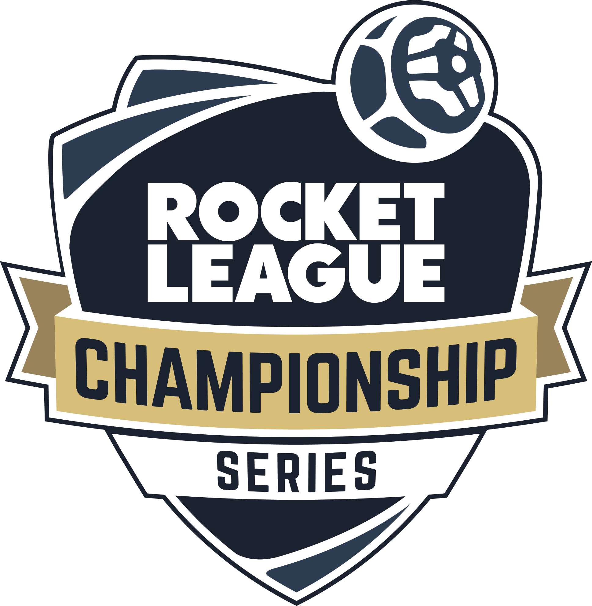
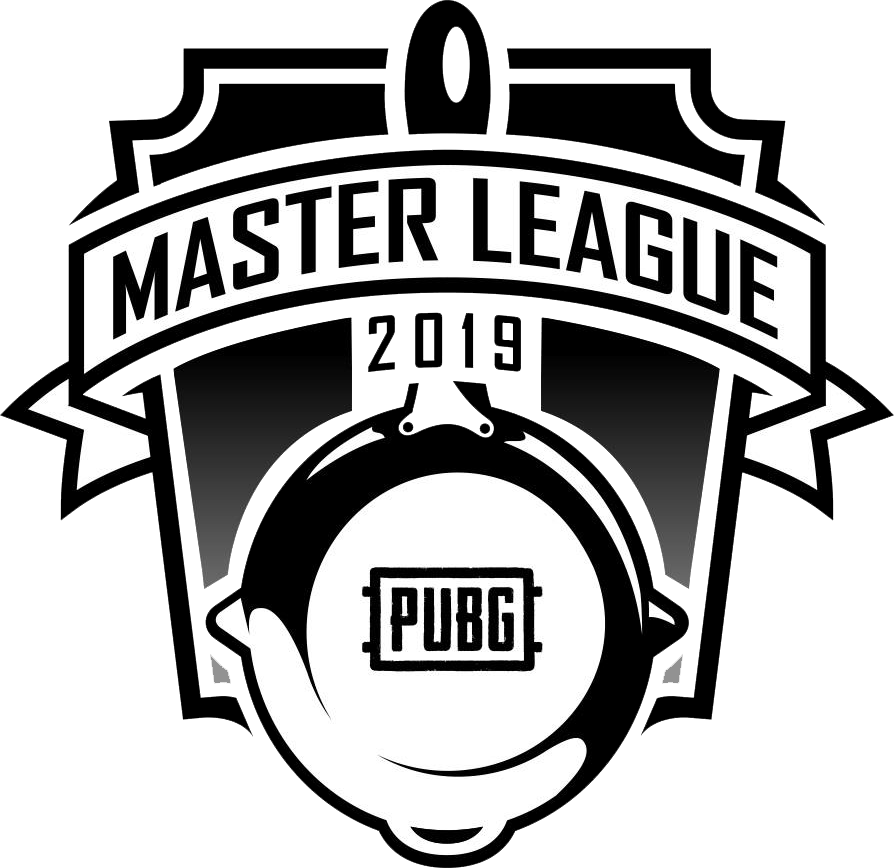

Highly Competitive Video Games, or eSports are Sports
Video games have been a large part of entertainment in the United States for many years; however, it did not take long for video games to go from pure entertainment to becoming competitive. It all began with Ralph a. Baer’s “Brown Box” in 1967; however, Stanford University held the first competitive video game contest only 5 years later in 1972 (Chikish, CARRERAS, and García 2019; Kane and Spradley 2017). Only two dozen people competed in this competition, but by 1982 over 10,000 individuals have competed for a chance to become the world champion at Space Invaders(Kane and Spradley 2017). In less than 15 years from their invention, video games have become highly competitive and the number of people competing only continues to grow. This highly competitive nature of video games and its participants has led to the creation of the term eSports, with the space invaders competition considered the first eSports event. Since the creation of the term eSports there has been debate on what separates eSports from sports, and whether or not a eSports is a sport. Highly competitive video games, or eSports, are sports by both conventional and unconventional definitions of a sport.
It is important to define what the conventional and unconventional definitions of a sport are. The conventional definition of a sport is, “an athletic activity requiring skill or physical prowess and often of a competitive nature, as racing, baseball, tennis, golf, bowling, wrestling, boxing, hunting, fishing, etc”(Definition of sport | Dictionary.com n.d.). While the unconventional definition of a sport is not as concrete, it will include elements that most widely considered sports have in common. These common elements include a large economic influence, the use of statistics to rate teams and players, a large amount of publicity and public influence, the use of gambling, and the existence of a collegiate league and distribution of scholarships. Three of these five factors are defined by John Thorn as to what makes a game a sport, “I suggest that three essential ingredients facilitate the growth of any localized game to national sport. First, gambling… Second, statistics…. Third, publicity”(Thorn, 2011, p. 86-87). The remaining two factors, economic influence and the existence of a collegiate league will be an addition to the factors John Thorn believes every sport has. The conventional definition will be explored first while the unconventional definition will be explored later in this paper; however, both definitions will be shown to apply to highly competitive video games.
According to our conventional definition, sports require physical prowess or skill , and competitive games require both of these. Not only does basal blood pressure rise while playing video games, a sign of physical exertion, competitive games that involve dancing can increase a participants MET’s by 4-9 ; whereas an increase of 4-6 MET is defined as moderate physical activity(Kane and Spradley 2017). This helps show two different ways video games require physical exertion ; however, it is important to recognize the MET only applies to competitive dancing games while the increase of basal blood pressure applies to all video games. Aside from the physical prowess, competitive video games require a very large amount of skill. The divide between professional eSports players and casual players is extremely large, “[professional] Players have a mechanical coordination that is not very common in people, and that many people wouldn’t stand a chance against a professional player”(Staff 2018). If competitive video games did not require skill, whether mechanical or intellectual, then there wouldn't be professional players, because there cannot be professional players without a clear divide in skills. If this clear divide in skills did not exist than anyone could be a professional player and this is clearly not the case. To create an analogy, a highschool football team will lose to any NFL team every time; similarly, a casual eSports team will lose to a professional eSports team every time, showing a clear disposition in skill between the professionals and their lesser skilled counterparts. Aside from this, the United States has already begun labeling professional eSports players as athletes through the distribution of p-1 Visas which are reserved for athletes(Kane and Spradley 2017). This information helps show that eSports players require both physical prowess and skill, and it is important to recognize that according to our definition players only need to represent one of the two(“requiring skill or physical prowess”) for the game to be considered a sport. Aside from the existence of skill and physical exertion in eSports, eSports are also highly competitive.
ESports are highly competitive. This competitiveness exists not only in the inner workings of the teams, similar to other high competition sports, but also exists between the different teams and regions. An example of inner team competitiveness would be the swapping of Counter Strike legends Jordan “n0thing” Gilbert and Mike “shroud” Grzesiek, Cloud 9’s two longest standing players for William “RUSH” Wierzba and Tarik “tarik” Celik(Milan Svejda 2017). Jordan “n0thing” Gilbert and Mike “shroud” Grzesiek were by no metric bad players, and were still significantly better than a lot of concurrent North American players at the time; however, Cloud 9’s management made the executive decision to bench the two of them for what they believed to be better players. This highlights the high level of competitiveness it takes to even compete on a professional eSports team, it doesn't matter how much of a veteran a player is, they will still get benched if the opportunities and open contracts are present. Aside from the level of competition involved in landing a contract with a professional team, there is a large, if not larger, competition between different teams. Every eSports team wants to be the best in the region and the world, the better a team plays the more money they will win through competitions or leagues. This provides a large monetary incentive for both players and teams and “[a]ccording to the website eSports Earnings, a community-driven gaming resource, DotA 2, LoL, and StarCraft II have awarded over $15 million in prize money through various competitions since their inception”(Keiper et al. 2017). Not only this but the “prize money is unsurprisingly aggressively escalating as well”(Keiper et al, 2017). This will only lead to a larger incentive for players and teams to work towards in the future. It is also important to recognize the competition between different regions. Generally there exists three different regions, North America, Europe, and Asia that compete at the top championships and sometimes the message sent by defeating an opposing region can drive a team to fight even harder. An example of this would be Cloud 9’s victory over Faze in the ELEAGUE Boston 2018 major. It was the first North American won major ever in Counter Strike history and, “This trophy means so much for a region that has historically disappointed”(Samuel Delorme 2018). Not only this but this major happened in Boston so Cloud 9 also had the energy of the crowd on their side, further motivating them to defeat the European super team. All of this highlights the high level of competition existing in the eSports industry, and is very similar to the competition involved in other major sports from fighting for the starting position too fighting for the top seed in the region or league.
ESports have already been shown to exist within the conventional definition of a sport, but it still needs to be proven to fall within the previously stated unconventional definition of a sport. Something that all majorly respected sports have in common is a large economic impact and gambling. eSports, as well as Video Games share a very large market value. The amount of money generated by eSports is quite significant and is only exanding. To show, “...based on the information provided by Newzoo (2016, 2017, 2018). Industry revenues increased by 500 million in the period from 2014 to 2017, and they are estimated to increase by almost 1,000 million during the period 2017-2021, reaching 1650 million in 2021”(Chikish, CARRERAS, and García 2019). This is not as significant as conventional sports ; however, the growth is staggering, increasing 850% in just 7 years assuming statistical projections are correct. If it continues to grow at that rate, or even at a lesser rate, it will eventually catch up to the value of mainstream sports’ market values. Aside from sports having a large economic impact they also have gambling. In 2016 eSports as a whole totaled 5.5 billion in gambling(Chikish, CARRERAS, and García 2019). This is a massive sum of money and is very substantial and will only continue to expand as the viewership and market value of eSports grows. Aside from mainstream sports having a large market value and the existence of gambling they also exhibit high levels of publicity and public influence.
Competitive video games create large amounts of public influence. One way to gauge the publicity of eSports is to look at the viewership of eSports. In 2017 eSports had a total viewership of 335 million people(Chikish, CARRERAS, and García 2019). Not only this but the viewership “grew by 130 million in the period from 2014 to 2017, and it is estimated to increase by 222 million during the period 2017-2021, reaching 557 million in 2021”(Chikish, CARRERAS, and García 2019). This shows the expansion of viewership and general interest in eSports is only expanding as well. Compare this to the NFL regular season unique viewers of only 200 million(Texas Irving 2018), it is easy to see the large amount of publicity generated by eSports. Not only this but most sports generate publicity in certain regions; an example being football which only generates significant publicity in the United States. In contrast eSports have a large sum of global publicity, generating large viewership in many different countries. Aside from viewership, the experience of viewing eSports in person are similar to other sports, and can be described as “walking into an arena and seeing over ten thousand fans avidly cheering on their favorite professional athletes”(Keiper et al. 2017). This sounds no different, in terms of hype and intensity, as walking into AT&T Stadium and watching the Cowboys pit against another professional team. One of the last ways to gauge publicity is too look at the sponsors involved. A major company is only going to sponsor their products at a certain event if they believe enough people will see their advertisements for it to be worth it for them and when “Mainstream companies such as Intel, Coke, ESPN, Red Bull, and Nissan are all in support of the eSports Market”(Keiper et al. 2017), it is clear that these multi billion dollar companies think eSports generate enough publicity for their advertisement needs. This advertisement info and other statistics present the large scale of publicity present in eSports and even shows the total amount of unique viewers surpasses that of the NFL, a staple of the sports industry.
Highly competitive video games, or eSports, have already been shown to adhere to two of John Thorn’s requisites for a game becoming a sport. These include the use of gambling, and publicity around the game; however, in order for it to fit John Thorn’s definition, it will also have to show the use of statistics to rate players and teams. eSports, like many other sports keep a very intricate collection of statistics regarding both players and teams. Look at Liquipedia as an example, a user generated website run by professional eSports team, Team Liquid.(Liquipedia n.d.). Liquipeida lists team and player statistics, as well as player profiles from 14 different eSports. They also list upcoming tournaments and events. The level of intricacy that goes into these statistics mirror that of mainstream sports. Counter Strike Global Offensive player statistics may include: headshot percentage, average damage per round, kills deaths and assists, successful flashbangs, and a whole lot of other statistics; while in Football they may track successful completions, sacks, time on field, and so forth. The statistics tracked may differ between football and Counter Strike Global Offensive; however, the nature and intricancy with how they are tracked are very similar. It is also important to recognize that the statistics tracked will vary between most eSports similar to how different statistics are tracked between mainstream sports. This level of tracking in eSports shows that eSports do have statistics and public scrutiny. It has been shown that eSports do adhere to John Thorn’s definition of what makes a game a sport; however, there is still one thing in particular that most mainstream sports have.
The last and final part to the unconventional definition of sports is the existence of scholarships and a collegiate league, and eSports has both of these. This is actually a recent advancement in the eSports community when in 2014 “ RMU enjoyed worldwide publicity following its announcement that it would be the first U.S. college/university to add a League of Legends Varsity eSports team as part of its official athletics program” not only this but the team had, “ ‘ … all the trappings of a professional squad: coaches, a film room, multiple teams for in-house practice and an increased pressure to perform for starting players (Lingle, 2014, para. 10)’ ” (Keiper et al. 2017). Over 115 universities now offer scholarships for collegiate level eSports(J. Collins 2019). This is a significant increase in only 5 years and helps elevate eSports to the same level as other sports, if universities are willing to give the same level of scholarships and money they would to incoming athletes from other sports, then on the most empirical level, universities value eSports players to the same level that they value other players. This shows that eSports do offer scholarship opportunities similar to other sports.
One of the main arguments against eSports not being considered sports is that they do not require physical prowess. Despite this being disproven in the early parts of this paper, physical prowess can be defined in a more abstract sense. An example being chess, which is recognized by the Olympic committee as well as 100s of countries as a sport. Chess doesn't inherently require a concrete and observable physical prowess either; however, it does “provokes physical fitness. Peak mental condition requires being in good physical condition”(Staff 2018). This is a more abstract definition of physical fitness, but it may help sway some people who disregard earlier proofs as to why eSports require physical prowess.
Highly competitive video games or eSports have been shown to fit the conventional definition of a sport through the highlighting of the skill and physical prowess involved in professional play as well as the large scale existence of competition. Aside from this eSports have been shown to adhere to John Thorns three factors that make a game a sport, as well as other requisites that other sports tend to adhere too. These include a large economic impact, gambling, large amounts of publicity and support from large companies, the use of statistics in rating players, as well as scholarship and support from universities. If eSports fit both conventional and unconventional definitions of sports, then they are not just games and entertainment; they are sports, and the Professionals that play them are athletes.
Different eSports leagues and Tournament Organizers
Rocket League Championship Series
Overwatch League
League of Legends European Championship
Rocket League Championship Series
Tom Clancy Rainbow Six Pro League
League of legend Masters Series
Eleague
Rising Stars Rocket League
Different eSports leagues and Tournament Organizers
North American League of Legends Championship series
Dreamhack
ESL Pro League
Hearthstone Grandmasters
The Summit
League of Legends Champions Korea
PUBG Master League